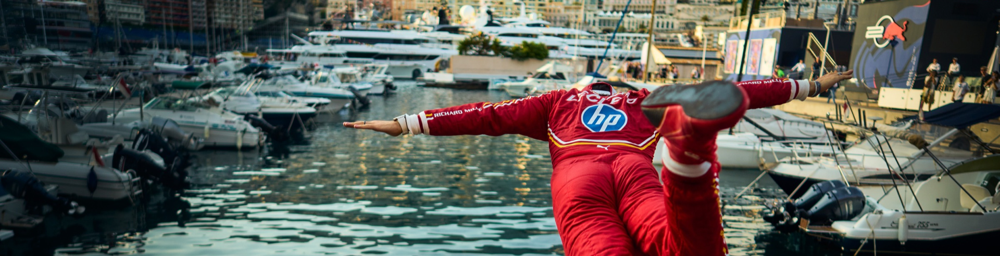
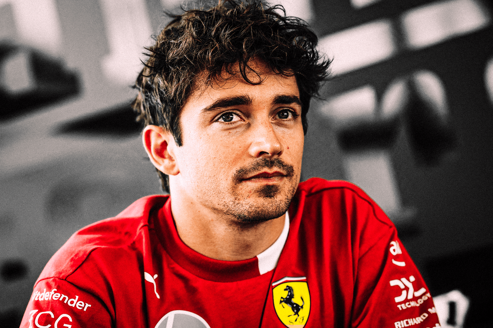

Charles Leclerc monacói autóversenyző, aki a Forma-1 egyik legismertebb pilótája. 1997-ben született Monte Carlóban, és már fiatal korától kiemelkedő tehetségnek számított a gokartversenyeken.

Charles Leclerc képe
2019-ben csatlakozott a Scuderia Ferrari csapatához, ahol gyorsaságával és időmérős teljesítményével hamar a szurkolók kedvence lett. Több futamgyőzelmet és pole pozíciót szerzett, miközben Monaco egyik legismertebb modern sportolójává vált.
Banana Leclerc meme
Különösen fontos számára a hazai verseny, a Monacói Nagydíj, mivel gyermekkorától ezt a futamot nézte Monte Carlo utcáin.